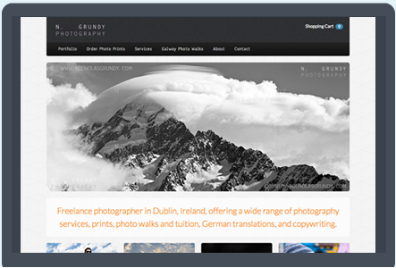

Freelancer Web Designer & Desenvolvedor Web sediado em Rio de Janeiro, Brazil.
Experiente em projetar e desenvolver sites personalizados com HTML CSS JS.
Fully responsive, custom designed Wordpress CMS websites